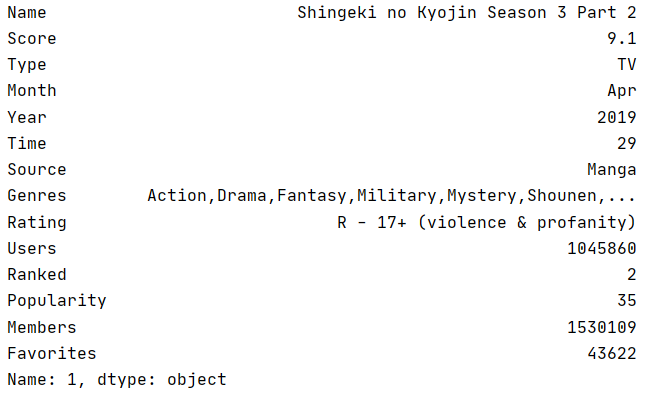

Intro
|
The goal of this part is to clean the datasets--to correct data errors, to remove useless data, etc. Finally, I achieved some clean datasets which is better for data analysis in future. |
Raw Data
|
Primarily, there are four datasets needed to be cleaned. They are: |
|
|
1000POPInfo.txt Collects detailed information of Top 1000 popular animes from MyAnimeList. 1000RKInfo.txtCollects detailed information of Top 1000 ranked animes from MyAnimeList. 1000RKInfoBangumi.txtCollects detailed information of Top 1000 ranked animes from Bangumi. bilibili bullet screensCollects bullet screens of 3 animes from bilibili. tweetsCollects 3000 tweets on 3 animes from Twitter. |
Cleaned Data(Python)
|
What I achieve from the codes are: |
|
|
1000POPInfo_cleaned.txt Cleaner version of 1000POPInfo.txt |
 |
|
1000RKInfo_cleaned.txt Cleaner version of 1000RKInfo.txt |

|
|
1000RKInfoBangumi_cleaned.txt Cleaner version of 1000RKInfoBangumi.txt |
|
|
bilibili bullet screens_cleaned Collects all the useful sentences of css files in bilibili bullet screens |
|
|
BulletScreen_CleanedData.txt Dataframe in a (words, label)-file table from bilibili bullet screens_cleaned |
Codes(Python)
Here are the codes used to clean the raw data.
data_cleaning1.py
Generates 1000RKInfo_cleaned.txt from 1000RKInfo.txt
data_cleaning2.py
Generates 1000POPInfo_cleaned.txt from 1000POPInfo.txt
data_cleaning3.py
Generates 1000RKInfoBangumi_cleaned.txt from 1000RKInfoBangumi.txt
data_cleaning4.py
Generates bilibili bullet screens_cleaned from bilibili bullet screens
datacleaning_bullet.py
Generates BulletScreen_CleanedData.txt (as dataframe) from bilibili bullet screens_cleaned (as corpus)(using the library jieba to cut the sentences into words in Chinese)
Cleaned Data(R)
|
What I achieve from the codes are: |
|
|
RK_whole_score.txt Contains two columns of [Word, Total_Score], in which Word comes from all the words in the Genres lists of animes in 1000RKInfo_cleaned.txt, Total_Score is calculated by adding all the scores of animes that include the genre word. |

|
|
RK_cut_tail_score.txt Contains two columns of [Word, Total_Score], similar to the dataset above, but with a different way of calculating Total_Score. I first reduce the scores of animes from 1000RKInfo_cleaned.txt by the minimum score and then perform the same process as mentioned above. |

|
|
POP_whole_score.txt Contains two columns of [Word, Total_Score], similar to the dataset RK_whole_score.txt, but having Total_Score calculated by the sum of Members, generated from the dateset 1000PopInfo_cleaned.txt. |
|
|
Bangu_RK_whole_score.txt Contains two columns of [Word, Total_Score], similar to the dataset RK_whole_score.txt, but generated from the dateset 1000RKInfoBangumi_cleaned.txt. |
|
|
tweets_cleaned Removes all the useless information including username and invalid characters of datasets from tweets |
|
|
Tweets_Dataframe.txt Read the data from tweets_cleaned into a dataframe form |
Codes(R)
Here are the codes used to clean the raw data.
DataCleaning1.r
Generates RK_whole_score.txt & RK_cut_tail_score.txt from 1000RKInfo_cleaned.txt (Removing or adding '#' at the start of line 15, 41, 42)
DataCleaning2.r
Generates POP_whole_score.txt from 1000POPInfo_cleaned.txt
DataCleaning3.r
Generates Bangu_RK_whole_score.txt.txt from 1000RKInfoBangumi_cleaned.txt
DataCleaning_tweets1.r
Generates tweets_cleaned from tweets
DataCleaning_tweets2.r
Generates Tweets_Dataframe.txt from tweets_cleaned